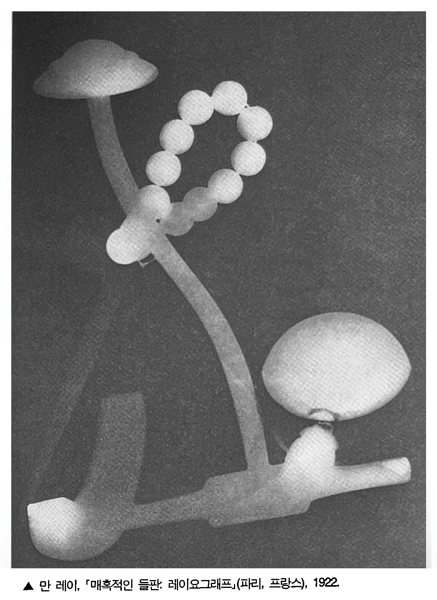
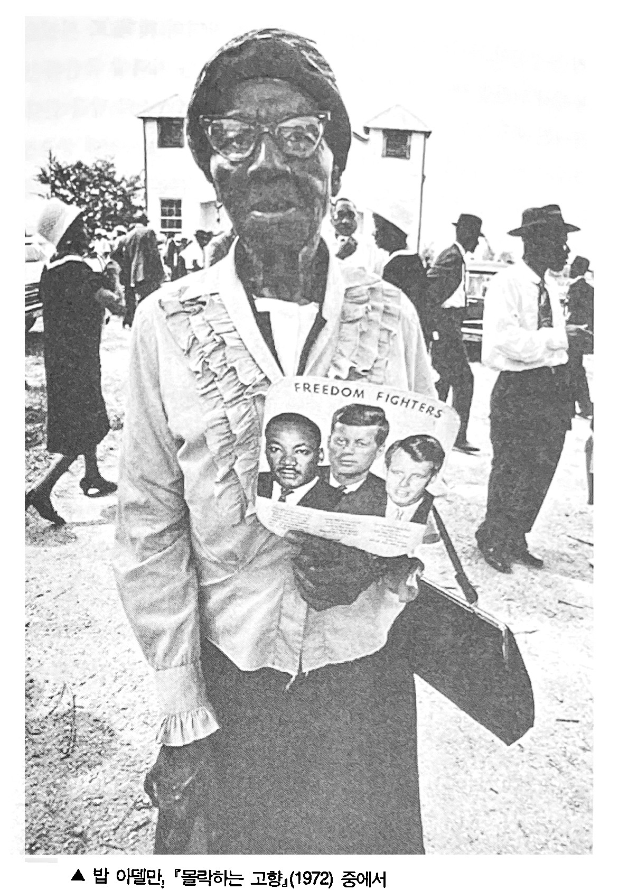

사진은 실제와 가장 가깝고 그렇기 때문에 매우 쉽다는 별로 좋을 것도 없는 명성을 얻고 있는 모방 예술이다. 사실, 사진은 유서 깊은 다른 예술이 경쟁서 줄줄이 낙오되는 와중에서도 마치 초현실주의처럼 지난 1백여 년간 현대의 감수성을 장엄하게 장악해왔던 유일무이한 예술이다. 저마다 손으로 제작해야 하며, 그 자체가 유일한 원본인 예술, 즉 순수 예술이 되려고 했던 회화는 애초부터 약점을 안고 있었다. 초현실주의가 관여한 예술로는(회화보다 만족할 만했지만, 다룰 수 있는 주제가 훨씬 풍부하고 복잡했던)산문, 연극, 아상블라주, 사진이 있는게 그 중에서 가장 성공한 것은 사진이었다.
원래부터 초현실적인 예술은 사진밖에 없다고 해서 사진이 공식적인 초현실주의 운동과 운명을 같이 한 것은 아니다. 오히려 정반대이다. 오늘날, 초현실주의의 영향을 의식적으로 받아들인 사진작가들(데부분 전직 화가였다)은 순수 회화를 모방해 '회화 같은' 사진을 찍었던 19세기의 사진작가들처럼 별로 중요시되지 않고 있다.
1920년대의 뛰어난 걸작들-솔라리제이션과 레이요그램 기법2을 쓴 만 레이의 사진, 라즐로 모홀리나기의 포토그램, 브라가글리아가 연구한 다중 노출, 존 하트필드와 알렉산드르 로드첸코의 포토몽타쥬-조차도 사진의 역사에서는 주변적인 업적으로만 여겨지고 있다.
자신들이 피상적이라고 여긴 사진의 리얼리즘을 방해하는 데 몰두했던 이 사진작가들은 오히려 사진의 초현실적인 특성을 가장 편협하게 전달해 왔다. 초현실주의가 사진에 남겨준 유산은 초현실주의가 주로 선보인 환상이나 각종 소도구가 1930년대의 첨단 유행이 급격히 흡수됐듯이 곧 시시한 것이 되어버렸다. 게다가 초현실주의 사진은 초상화 같은 양식화된 스타일만을 남겨놓게 됐는데, 이것은 초현실주의의 화화, 연극, 광고 같은 다른 예술에 장식처럼 도입해 써먹곤 했던 갖가지 관행과 하등 다를 바 없는 것이었다. 사진 활동의 대세도 현실을 조작하거나 극화하는 초현실주의의 기법이 지나치게 장황한 것으로 여겨지거나 불필요해지는 쪽으로 흘러가게 됐다. 사진은 조작이 덜되어 있고 솜씨를 부렸다는 것이 덜 분명해 보일수록 더 솔직하게 보인다. 게다가 그 권위도 훨씬 더 높아지는 듯하다.
초현실주의는 항상 사건을 일으켰고, 우연을 반겼으며, 무질서를 즐겨 왔다. 실질적으로, 그것도 최소한의 노력으로 자기 자체를 직접 만들어내는 오브제보다 더 초현실적인 것이 있을까? 자신에게 들어닥친 우연 덕택에 훨신 더 환상적으로 제 모습을 드러낼 뿐만 아니라, 그 아름다움과 정서적 효과까지 훨씬 더 고양되는 오브제보다, 어느 위대한 초현실주의 시인이 아름다움의 본보기라며 환호성를 내지른 저 우발적인 만남, 죽 재봉틀과 우산의 병치가 어떻게 가능한지 가장 멋지게 보여줬던 것은 사진이다.
버스트 키튼은 '카메라맨'(1928)이라는 무성영화를 통해서 [사진을 둘러싼] 이런 신화를 완곡히 풍자한 바 있다. 매일 공상에 빠져 지내는 우리의 주인공은 기계를 다루는 데 서툴러 삼각대를 집어들 때마다 창문과 문에 부딪치면서도, 망가져 버린 자신의 기계와 쓸데없이 씨름한다. 그렇지만 쓸만한 사진을 한 장도 찍지 못하던 우리의 주인공은 결국 엄청난 장면을 찍게 된다(뉴욕 차이나타운의 중국인 조직 폭력배들간에 벌어진 싸움을 찍어 특종을 거둔다). 그것도 실수로. 그런데 알고 보니, 카메라에 필름을 넣고 싸움이 벌어지는 동안 카메라를 작동시켰던 것은 주인공의 애완용 원숭이였다.
초현실주의의 신봉자들은 초현실적인 것을 보편적인 그 무엇으로, 즉 일종의 심리학적 문제로 여기는 잘못을 저질렀다. 정작 초현실적인 것은 한정된 계급의 지극히 지엽적이고 인종적이며 낡아빠진 취향에 불과했음이 판명됐는데도 말이다. 예를 들면, 초현실적 사진이 등장한 시기는 당대의 사진작가들이 자연스러운 삶의 단면을 찾으려고 맨 처음 런던, 파리, 뉴욕의 거리를 어슬렁거린 1850년대로까지 거슬러 올라갈 수 있다. 프로이트의 충실한 신봉자답게, 자신들이 찾은 이미지는 무의식에서 나온 것이라고 믿었던 초현실주의자들은 그 이미지의 내용이 당연히 보편적이고 영원하리라고 믿었다. 그러나 초현실주위자들은 거칠게 움직이기에 전혀 동질화시킬 수 없는 비합리적이고 불가사의한 것, 즉 시간 그 자체를 제대로 이해하지 못했다. 어떤 사진을 초현실적으로 보이게 만들어 주는 것은 그 사진이 자아내는 도저히 뿌리칠 수 없는 파토스(이것은 과거의 시간이 보낸 일종의 메시지이다)이며, 자기 자체가 어느 계급에 속해 있는지를 은근히 암시해 주고 있는 그 사진의 구체성이다.
호기심, 초연함, 직업 정신으로 이곳저곳에서 타인의 현실을 주시허는 사진작가는 자신이 계급적 이해관계를 초월해 행동하고, 보편적인 시각을 지닌 듯이 활동한다. 사실, 사진은 애초부터 중간 계급에 속한 만보자3의 눈을 확장시켜주는 도구였다. 보들레르는 이 만보자의 감수성을 정확하게 묘사한 바 있다. 도시라는 지옥을 한가로이 거닐 듯 떠돌며 관찰하는 외로운 보행자, 즉 도시가 지극히 육감적인 장소라는 사실을 깨달아 가는 이 관음적 방랑자가 도구[즉,카메라]를 쥐게되면 곧 사진작가가 되는 것이다. 지켜보는 즐거움을 잘 알고 있을뿐만 아니라 감정을 이입하는 데도 뛰어난 만보자는 이 세계가 참으로 '사람들의 눈길을 끌만하다'는 것을 깨달아간다. 숨겨진 짐실을 밝힌다거나, 사라져 가는 과거를 보존한다거나 하는 고귀한 목적에 봉사한다는 이유로 사진 촬영을 정당화하는 것은 예나 지금이나 똑같다.
가난은 더 이상 부보다 초현실적이지 않다. 누더기를 걸쳤다고해서, 왕녀 같은 야회복을 입었거나 원시인처럼 발가벗은 사람보다 초현실적인 것은 아니다. 초현실적이라는 것은 사진이 제시하고 이어주는 거리감, 예컨대 사회적이거나 시간적인 거리감이다. 즉 사진을 대하는 중간 계급의 관점에서는 부랑자의 사진도 유명인사의 사진만큼 흥미롭다. 따라서 사진작가가 정형화된 제재에 굳이 역설적이고 지성적인 태도를 취할 필요는없다. 지극히 상투적인 피사체도 경건하게 존경할 만한 매력을 내뿜을 수 있으니.
굳이 말하지면, 리처드 아베든의 신비한 사진이 무솔리니 시대의 유명인사를 찍은 헝가리 출신의 사진작가 지타 카렐의 사진보다 더 뛰어난 것은 아니다. 오리려 그녀의 인물 사진은 오늘날 아베든의 인물 사진만큼이나 기발해 보이며, 초현실주의 영향을 받은 그녀의 동료 세실 비통의 사진보다 훨씬 초현실적으로 보이기까지 한다. 비통은 자신의 피사체를 환상적이고 화려한 배경에 세워두곤 했기에 피사체를 일종의 우상처럼 보이게 만들었다. 카렐의 사진은 자신의 피사체였던 이탈리아의 장군, 귀족, 배우 등이 원하는 대로 정적이고 화려한 자세의 모습을 찍었기에 그의 사진은 피사체의 원래 모습을 제대로 정확히 보여준다. 오히려 피사체를 존중했기에, 카렐은 피사체가 더 흥미롭게 보일 수 있도록 만들었다. 그리고 세월은 이들을 순하고 지극히 인간적인 사람처럼 보이게 만들었다.
이 세상에는 과학자처럼 행동하는 사진작가도 있고 도덕주의자처럼 행동하는 사진작가도 있다. 과학자는 세계를 분류하고 도덕주의자는 역경에 집중한다. 아우구스 잔더가 1911년부터 착수한 프로젝트, 즉 독일 민족을 사진으로 분류하려는 계획은 과학을 위해서 사진을 활용한 예이다. 잔더의 '원형적 사진'(잔더는 자신의 작업을 이렇게 불렀다)은 19세기 골상학, 범죄학, 정신의학, 우생학 같이 편파적이기 그지없는 유형학이 내세웠던 유사-과학적 중립성을 띠고 있다.
1880년대 경 피사체의 운동을 찍은 각 사진이 쭉 이어지도록 정확히 세분해 늘 봐왔던 것(말이 달리는 방법, 사람이 움직이는 방법)을 둘러산 세인들의 오해를 불식시킨 이드위어드 머이브리지처럼, 잔더도 사회를 세분해 유형별로 나누는 식으로 사회 질서을 파악하려고 했다. 잔더의 사진집 "우리 시대의 얼굴"이 출간된지 5년 뒤인 1934년, 나치는 남아 있던 그의 책과 인쇄판을 압수해 파괴해 버렸다. 그러니 한 국가의 모든 인물 사진을 찍으려 했던 그의 계획이 갑자기 중단된 것도 놀랄 일은 아니다.(나치 시기에도 독일에 남았던 그는 풍경 사진으로 작업 방향을 바꿨다) 그의 계획은 반사회적이라는 이유로 단죄됐다. 아마 나치에게는 사진작가를 냉정한 인구조사원처럼 여긴 그의 태도는 물론, 쓸데없는 것까지 모조리 기록해 설명하고 비판하려 했던 그의 완벽함까지 반사회적이었으리라.
잔더는 자신도 모르게 자신의 스타일대로 온갖 계급의 사람을 찍었던 것이다. 그는 전문직 종사자들과 부유한 사람들의 사진을 찍을 때에는 별다른 소도구 없이 실내에서 찍는 경향이 있었다. 예컨대 이들은 스스로 자신들을 말하는 것이다. 그러나 노동자들과 낙오자들의 사진을 찍을 때에는(이들의 사진은 대개 야외에서 촬영되었는데)뭔가 배경[무대]을 꾸미곤 했다. 즉 이들에 대해서 말해 주는 것은[이들 자신이라기보다는] 바로 이 배경이었다. 간단히 말해서 중간 계급과 상류 계급은 자신들만의 독립된 정체성을 갖고 있지만 노동자들과 낙오자들은 그런 정체성을 지닐 수 없다는 듯이 취급됐던 것이다.
잔더의 사진에서는 모든 사람이 각자의 위치에 자리잡고 있을 뿐, 그 누구도 제 자리를 못 찾거나 벗어나는 법이 없으며 균형을 잃지 않는다. 크레틴병4 환자도 벽돌공과 똑같이 냉정한 모습이고, 제1차 세계대전에서 다리를 잃은 상이용사도 제복을 입은 젊은 병사처럼 건강하게 보인다. 뭔가 언짢은 낯을 한 공산주의자 학생도 미서짓는 나치 대원의 모습과 비슷하며, 공장 감독관도 오페라 가수와 다름없은 모습이다. "사람들을 비판하거나 묘사하는 것이 내 목적은 아니다"라고 잔더는 말했다.

아우구스트 잔더, '우리 시대의 얼굴' (베를린/1929) 중에서
잔더처럼 광범위한 분류 작업을 시도한 미국인은 별로 없다. 가난한 사람들과 약탈당한 사람들, 즉 국가에서 잊혀진 시민들을 사진으로 기록해 두려는 전통적 욕구를 계속 반영하고 있긴 했지만, 미국의 위대한 인물 사진들-워크 에반스의 '미국사진(1938)과 로버트 프랭크의 '미국인들'(1959)등-은 별다른 계획없이 제작되곤했다. 미국에서 진행된 집단사진 중 가장 야심 만만했던 작업, 즉 로이 에머슨 스트라이커의 지휘아래 1935년 농업안정국이 전개했던 작업도 '저소득층'에게만 관심을 기울였다.*
1895년부터 1904년까지 애리조나 주와 뉴맥시코 주에서 인디언들을 찍었던 애덤 클라트 브로맨의 멋진 사진은 과시적이거나 감상적이지도, 생색을 내지도 않는다. 오히려 그의 사진은 농업안정국의 사진과 정반대 분위기를 띤다. 그의 사진은 감동적이지도, 독특하지도, 연민을 불러일키지도 않는다. 인디언들을 위해서 뭔가를 선전하려고도 하지 않는다. 잔더는 자신이 사라져 가고 있는 세계를 찍고 있다는 사실을 알지 못햇으나, 브로맨은 일고 있었다. 그리고 브로맨은 자신이 기록하고 있는 그 세계가 이제는 더 이상 구원받을 길이 전혀 없다는 사실까지 알고 있었다.
유럽의 사진은 주로 사람들의 눈길을 끌 만한가(가난한 사람들, 이국적 모습, 지나간 시간), 중요한가(부유한 사람들, 유명한 사람들), 아름단운가 같은 관념에 좌우된다. 흔히 사진은 중립성을 높이 평가하거나 목표로 삼는 경향이 있다. 특정 사회 질서가 영원하리라고 믿지 않는 미국인들, 변화의 필연성뿐만 아니라 '현실'에도 익숙한 미국인들은 흔히 당파성이 강한 사진을 찍는 경향이 있다. 예컨대 무엇을 존중해야만 하는지 보려 주려고 할뿐만 아니라 무엇을 직시하고 개탄할 필요가 있는지(그리고 고칠 필요가 있는지) 제시하려고 사진을 찍는 것이다. 미국의 경우, 사진을 찍는다는 것은 역사와 견고한 관계를 맺는다기보다는 역사를 요약한다는 뜻이다. 그리고 지리적이거나 사회적인 현실에 관여한다는 뜻인데, 이것은 훨씬 희망적인 동시에 훨씬 약탈적인 면모를 띠기도 하다.
사진의 약탈적인 면모는 사진이 관광과 맺은 동맹 관계에서 잘 볼 수 있는데, 특히 이 동맹은 미국에서 제일 먼저 이뤄졌다. 1869년 대륙횡단 철도의 완공으로 서부시대가 열리자, 이지역은 카메라를 통해서 식민지화 되어갔다. 특히 아메리카 인디언의 경우가 가장 잔인했다. 브로맨처럼 심중하고 진지한 아마추어 사진 작가는 남북 전쟁 이후부터 인디언의 사진을 찍었다. 예컨대 아마추어 사진 작가는 19세기 말경 서부로 우르르 몰려가 인디언의 삶을 "멋지게" 사진으로 찍는 데 열중한 관광객들의 전위였던 셈이다. 이들은 인디언이 신성시하는 물건과 장소, 종교 행사 때 추는 춤 등 사진으로 찍으면서 인디언의 사생활을 침해했다. 필요하다면 자세를 취해 달라고 인디언에게 돈을 쥐어주거나, 좀 더 멋진 사진을 찍을 수 있게 전통 의식을 재현하도록 만들면서까지 말이다.
그러나 관광객들이 떼지어 휩쓸고 간 뒤 변해버린 인디언의 전통 의식은 누군가가 사진으로 찍은 뒤 바로잡히게 된 대도시의 추문과 하등 다를 바 없다. 추문을 캐러 다니는 사람들이 소기의 성과을 거두는 한, 그들이 사진으로 찍은 대상 자체가 변해버리기 마련이다. 사실, 어떤 대상의 사진을 찍는다는 것은 그 대상을 변하게 만든다는 것이기도 하다. 아무리 사소한 변화일지라도 위험, 가령 사진의 피사체를 협소하게 이해하도록 만드는 것 같은 위험을 가져오는 법이다. 1880년대 말 리스가 사진에 담은 뉴욕의 빈민가 멀베리 벤드는 훗날 헐리게 됐고, 그곳 주민들은 당시 주지사였던 시어도어 루스벨트의 지시로 새 집을 갖게 됐다. 그렇지만 멀베리 벤드 못지 않게 끔찍했던 또 다른 빈민가들은 그대로 방치됐다.
사진 작가들은 약탈하면서 보존하고, 고발하면서도 신성시한다. 사진은 성마르게 현실을 대하고 기계를 사용한 활동을 즐기는 미국인들의 특성을 잘 보여준다. 1923년 하트 크레인은 스티글리츠를 다룬 글에서 이렇게 말했다. "속도가 가장 중요하다. 100분의 1초까지 정확하게 포착해내는 속도, 그래서 그 순간의 움직임이 사진 안에서 무한정 지속될 수 있는 속도, 순간이 곧 영원을 만든다." 신대륙의 놀라은 광활함과 낯선 모습을 마주 대하자, 사람들은 자신이 방문한 장소를 소유라도 하려는 듯이 카메라를 휘두르고 다녔다. 카메라 제조회사 코닥은 사진으로 찍을 만한 것의 목록을 적어놓은 간판을 마을 입구마다 세워두기까지 했다. 국립공원이 사진으로 찍기 좋은 장소가 표시된 간판을 세워두듯이 말이다.
사진은 과거에 대한 낭만주의(극단적이든 아니든)뿐만 아니라 현재에 대한 찰나적 낭만주의 제공해준다. 미국에서는 사진작가가 그저 과거를 기록하는 것만이 아니다. 과거를 발명하기도 한다. 그래서 베레니스 에벗은 이렇게 말한 것이다. "사진작가란 당대의 가장 뛰어난 사람이다. 그의 눈을 통하면 현재가 과거로 변해버리니 말이다."
만 레이에게 수년간 도제생활을 했고, 당시 거의 알려지지 않았던 외젠 앗제의 작품을 발견(구원)한 뒤 1929년 파리에서 뉴욕으로 돌아온 애벗은 뉴욕의 모습을 기록하기 시작했다. 1939년 출간된 자신의 사진집 '변해 가는 뉴욕'의 서문에서 그녀는 이렇게 말했다. "미국을 떠나지 않았더라면 뉴욕을 사진에 담고 싶어하지 않었을 것이다. 그러나 새로운 시각으로 뉴욕을 보게 되니 뉴욕이 나의 고향이며, 사진으로 남겨야만 할 도시라는 걸 알게 됐다." 그녀의 목적은 1898년부터 1927년 사망할 때까지 세월에 시달려 사라져 가고 있던 피리의 모습을 끈기 있게, 그리고 남몰래 작은 사진으로 기록했던 앗제의 목적을 연상시킨다. 그렇지만 그녀는 뭔가 훨씬 더 환상적인 것을 기록해뒀다. 즉, 새것이 끊임없이 바뀌는 광경을. 1930년대의 뉴욕은 파리와 무척 달랐다. 그녀는 과거를 기념하려고 하기보다는 스스로를 파괴하는 고질적인 병을 앓고 있는 미국이 지난 10년간 겪어온 모습을 기록해 두려고 했을 뿐이기 때문이다.
과거를 소모품으로 바꿔버리는 사진은 일종의 지름길이다.사진을 수지한다는 것을 초현실주이자처럼 현실을 몽타주하고 역사를 생략해 버린다는 것이다. 온갖 폐품으로 멋진 오브제, 회화, 환경예술을 만들어 냈듯이, 우리도 이제 온갖 폐기물을 활용해 역사를 만들고 있다. 미국은 이제 발견된 오브제가 넘쳐나는 초현실적인 나라가 된 것이다. 우리의 잡동사니가 예술이 되어 버렸고, 우리의 부스러기가 역사가 되어 버렸다.
사진은 한 웅큼의 환상이자 한 뭉치의 정보이다. 사진은 풍요롭고, 낭비를 일삼으며, 만족할 줄 모르는 사회의 본질적인 예술이 됐다. 그러니까 남북 전쟁이래 미국에서 모습을 갖춰나가기 시작했고, 제 2차 세계대전 직후에야 유럽을 정복했던 새로운 대중문화의 필수 도구가 된 것이다.
역사를 헐값에 사들이려 한 이 초현실적인 방법은 겉으로는 탐욕과 오만함을, 속으로는 우울함을 드러내고 있다. 사진의 초창기인 1830년대 말, 윌리엄 H. 폭스 탈보트는 사진이 '시간의 상처'를 기록하는데 특히 적합하다고 말함 바 있다. 탈보트가 말한 것은 낡은 건물이나 기념물에 생긴 상처였다. 그렇지만 우리는 돌의 마멸보다는 육신의 마멸에 더욱 흥미를 보인다. 우리는 사람들이 나이 들어가는 현실을 사진을 통해서, 가장 은밀하고 괴로운 방식로 주시한다. 자신이 잘 알고 있는 사람이든 자주 사진에 찍히는 공인이든, 어떤 사람의 낡은 사진을 바라보는 이유는 무엇보다도 뭔가를 느끼기 위해서다. 가령 그때에는 내가 얼마나 젊었던가를 사진은 죽음을 낱낱이 기록해 둔다.
오늘날 오래된 사진을 새로운 맥락에서 복권시키는 것은 중요한 출판 산업이 됐다. 사진은 일종의 파편에 불과한 것으로서, 세월이 지나면 사진 안에 고정되어 있던 내용도 떨어져 나간다. 사진은 이리저리 떠돌다가 아늑하고도 추상적인 과거가 되어버리기에 다양하게 읽힐 수 있게 된다. 사진은 일종의 안용구이기도 하기에, 사진을 모아놓은 책은 인용구를 모아놓은 책이나 마찬가지이다. 사진을 책에 담아 발표하는 일이 빈번해지면서 사진 자체가 인용구와 대등해진 것이다.
밥 아델만의 "몰락하는 고향"(1972)이 좋은 예이다. 이 책은 1960년대의 5년 동안 미국에서 가장 빈곤한 앨라배마의 농촌 모습을 찍어 놓은 사진집이다. 인생의 패배자들을 호의적으로 기록해 놓은 그의 책은 "이제 유명한 사람들을 찬양하자"(정확히 말하면 이 사진집의 피사체는 유명한 사람들이 아니라 잊혀진 사람들이다)를 계승하고 있다. 그러나 에반스는 물납 소작농의 생활상을 담은 자신의 사진에 독자들이 좀 더 공감할 수 있게 만들려고 제임스 에이지의 유려한 산문(때로는 장황한)도 함께 실었다.
초현실주의는 기괴한 것을 보편화해 거기에서 뉘앙스(그리고 매력)을 발견하는 예술이다. 그리고 사진 촬영은 초현실주의처럼 사물을 바라보는 데 훨씬 적합한 활동이다. 따지고 보면 우리는 사진을 초현실적으로 바라본다. 우리는 옛 사진을 찾으려고 다락방, 시립, 주립 역사학회의 문서보관소 등을 샅샅이 뒤지곤한다. 현대 문명을 유리한 위치에서 급진적으로 비판할 수 있는 새롭고 멋진 전략을 약속한 초현실주의자들은 모든 형적을 역사와 동일시하는 역설에 쉽게 빠져들고 말았다. 초현실주의는 반동적인 얘기만을 들려준다. 역사에서 진기함, 농담, 죽음의 여행 같은 것만을 찾아내는 것이다.
음침한 공장 건물과 광고판으로 뒤덮인 거리도 카메라의 눈을 통해서 바라보면 교회나 전원 풍경만큼 아름다워 보인다. 현대적인 취향으로 보면 더 아름답기까지 할 것이다. 중고품 가게야말로 전위적 취향의 신전이며 벼룩시장을 찾아가는 것은 미적 순례나 마찬가지라고 주장한 사람들은 안드레 브르통같은 초현실주의자들이라는 사실을 기억하라. 초현실주의자외 비슷한 넝마주이는 예민한 감수성으로 다른 사람들이 추하다고 어긴 것, 흥미롭지도 않고 가치 있지도 않다고 생각한 것(고물, 유치하거나 통속적인 오브제, 도시의 잡동사나 등)에서 아름다움을 찾아낸다.
인용을 통해서 산문 픽션, 회화 영화 등을 구성하는 방법이 초현실주의 특유의 취향이듯이, 최근들어 거실이나 침실 벽에 복제된 그림 대신 사진을 걸어놓는 유행도 초현실주의의 취향이 널리 확산됐다는 지표이다. 사진은 초현실주의가 오브제의 조건으로 내세운 여러 기준(도처에 널려 있을것, 값이 쌀것, 별로 호감이가지 않을 것)을 만족시킨다. 회화는 의뢰를 받아 제작되거나 구매된다. 그러나 사진은(앨범이나 서랍에서)발견되고, (신문과 잡지에서) 오려지며, 쉽사리 찍을 수도 있다. 게다가 오브제로서의 사진은 회화로서는 꿈도 못꿀 방법으로 대량 생산될 수 있을뿐만 아니라, 어떤 면에서는 원래의 아름다움이 파괴되지도 않는다. 밀라노에 소장되어 있는 레오나르도 다빈치의 "최후의 만찬"은 오늘날 상태가 그다지 좋아 보이지 않는다. 오히려 상태가 아주 나빠졌다. 그렇지만 사진은 낡거나, 변색되거나, 얼룩지거나, 손상되거나, 빛이 바래도 괜찮아 보이고, 종종 더 좋아 보이기까지 한다(이렇게 보면 사진은 건축과 유사한 예술이다. 건축물도 세월이 흐르수록 더 훌륭해 보이니 말이다. 파르테논 신전 같은 여러 건축물은 폐허일 때가 더 멋져 보이기까자 한다).
현실에 대한 불만을 공공연히 내비쳤던 초현실주의는 정치력이 중요하고, 카메라가 좌지우지하는 산업화된 세계의 사람들이 오늘날 일반적으로 보여 주는 태도, 즉 소외감을 예견해 왔다. 도대체 왜 현실은 불충분하고, 단조롭고, 지나치게 질서 잡혀 있고, 피상적으로만 합리적이라고 여겨지게 된 것일까? 한때 현실에 대한 불만은 또 다른 세계를 향한 갈망이었다.
사진은 필연적으로 현실과 모종의 거래를 한다. 이 세계는 '저 밖에' 있기 때문에 카메라 '안으로' 들어올 수 있는 것이다. 영화의 한 장면을 따오는 것과 책의 한 구절을 따오는 것은 전혀 같지 않다. 어떤 책을 읽는 시간은 독자에게 달려 있다. 그렇지만 영화를 보는 시간은 영화 제작자가 결정하고, 영상도 어떻게 편집됐느냐에 따라 빠르거나 느리게 인식될뿐이다. 따라서 한 순간을 마음만 내키면 오랫동안이라도 볼 수 있게 해주는 스틸 사진은 영화와는 상반된 형태를 갖고 있다. 삶이나 사회의 특정한 순간을 정지시켜 놓은 사진이 일련의 과정, 예컨대 시간에 따라 흘러갈 수밖에 없는 삶이나 사회와 상반된 형태를 갖고 있듯이 말이다. 사진에 찍힌 세계는 늘 똑같은 모습으로 존재한다. 그리고 스틸 사진이 영화와 부정확한 관계를 맺듯이, 현실 세계와 부정확한 관계를 맺을 수 밖에 없다. 삶에서는 모든 순간이 중요하거나, 빛을 발하거나, 영원히 고정되어 일이 일어나지 않는다. 그렇지만 사진에서는 그런일이 발생한다.
문화의 급진주의자, 더 나아가서는 혁명가가 되고 싶어한 초현실주의자들은 자신들이 맑스주의자가 될 수 있고, 실제로 그렇게 되어야만 한다는 선의의 오해에 종종 빠져들곤 했다. 그러나 초현실주의의 미학은 지나칠만큼 아이러니로 가득 차 있었기에 20세기의 가장 매혹적인 도덕주의와 양립할 수 없었다. 맑스는 세계를 변화시키려고 하기보다는 세계를 해석하려고만 한다는 이유로 철학을 질책하앴다. 그렇지만 초현실주의적 감수성의 테두리 안에서만 작업을 해온 여러 사진작가는 세계를 해석하려는 노력조차도 공허할뿐이라고 주장하면서 그보다는 세계를 수집해야 한다는 제안을 내놓았다
1. Memento Mori. "죽음을 기억하라"라는 뜻의 라틴어. 죽음의 필연성을 되새겨주는 징표(가령 해골)을 뜻하기도 한다.
2. rayogram과 solarization은 미국 사진작가 만 레이가 각각 1922년과 1929년 선보인 기법이다. 레이요그램은 카메라를 사용하지 않고 인화지 위헤 물체를 얹은 뒤 직접 빛을 비추어 추상적인 이미지를 만드는 기법이며 (흔히 '포토그램이라고도 불린다), 솔라리제이션은 필름이나 인하지를 (현상중에 재차 빛을 비추는 식으로) 빛에 과다 노출시켜 명암이 반전된 채 동시에 나타나도록 만드는 기법이다.
3. Flaneur 1863년 보들레르가 '피가로 Le figaro'에 기고한 글('현대의 화가 Le peintre de la vie moderne')에서 처음 쓴 말 원래는 한가로이 거닐거나 빈둥거리는 사람을 뜻하는데, 보들레르는 별다른 목적없이 대도시의 군중사이를 배회하며 관찰하는 인물이라는 뜻으로 사용했다. 그의 표현을 빌리면 "열정적인 구경꾼"이자 "군중과 한 몸이 되려고 하는" 만보객은 "현대 화가[예술가]의 화신"이다.
4. Cretin. 알프스 산지의 풍토병으로 불구와 백치 증세를 보인다.
5. '음-양화기법negative-positive process'이란 감광유제를 바른 종이를 네거티브 필름처럼 만들어 다른 감광지에 인화하는 방식으로서 (이 기법으로 제작된 사진이 바로 칼로타입이다), 네거티브 필름처럼 쓰일 감광지에 '잠상 latent image'을 맺게 한 뒤 현상 과정에서 이를 나타나게 하는 방식이었다. 그러나 '직접양화기법Positif direct'을 쓴 다게르의 다게레오타입은 감광유제를 바른 은판에 곧바로 상이 맺히게 해서 만드는 사진이었다. 따라서 음-양화기법은 피사체를 장시간 똑같은 자세로 세워둘 필요도 없을뿐더러, 똑같은 사진을 여러 장 복제할 수도 있었다.
6. Hard-edge. 1950년 말, 당시 미국 화단의 주류였던 추상표현주의에 반대해 대두된 기하학적 추상화의 일종. 윤곽이 뚜렷한 도형과 선명한 색깔로 화목 전체를 가득 채우는 방식을 썼다. 추상표현주의 화가 뉴먼Barnett Newman, 1905~1970과 로스코Mark Rothko, 1902~1970의 후기 작품도 이런 경향을 띠고 있다.
7. 손택은 블레이크(William Blake, 1757~1827)의 시 '천국과 지옥의 결혼 The Marriage of Heaven and Hell'(1792)의 한구절, 특히 14번째 도판(블레이크는 손수만든 채색 도판에 시를 쓰곤 했다)에 적힌 "지각의 문(감각)이 깨끗이 정화되면 모든 것이 있는 그대로 보이리라. 무한 그 자체로"를 염두에 둔 듯하다.
8. '기상 conceit'이란 도저히 어울리지 않는 상이한 두 사물에서 공통점을 발견해 둘 사이에 유사성을 확립하는 비유법이다. 이 기법의 대가인 영국 시인 던(John Donne, 1572~1631)은 '좋은 아침 The Good-Morrow'(1631)이란 시에서 한 쌍의 연인을 '두 반구半球'에 비유하는 등 지리적 심상을 많이 썼다.
9. '월든 Walden'은 매사추세츠 주의 콩코드에 있는 호숫가로서 소로우(Henry David Thoreau, 1817~1862)의 저서 '월든: 숲 속의 생활 Walden, or Life in the Woods'(1854)을 통해서 유명해졌다. 이 저서에서 월든은 자연의 이상적인 모습을 그대로 간직한 장소로 묘사되고 있다.
10. Lettre a Jane. 1972년 고다르가 자신의 동료 고랭(Jean-Poerre Gorin, 1943~ )과 함께 제작한 다큐멘터리. 일련의 스틸 사진과 내레이션만으로 이뤄진 작품으로서, 한창 전쟁 중이던 북베트남의 하노이를 방문해서 반전 여설을 한 미국 여배우 폰다(Jane Fonda, 1937~ )를 비판해 큰 논란을 일으킨 작품이기도 한다. 고다르와 고랭은 폰다가 '렉스프레스'에 실린 사진에서도 자신의 사회적 역할(배우로서의 역할)에 충실했을 뿐이며, 그렇기 때문에 베트남인들의 투쟁을 대하는 서구인들의 전형적 태도-- 특히 '부르조아적 도략'으로서의 사회적 참여를 반복했을 뿐이라고(즉, 폰다의 행동은 '충분히' 혁명적이지 못했다고) 비판했다. 고다르와 고랭은 영화의 내레이션 일부를 정리해 발표하기도 했다.
11. '회화적pictorial'이라는 단어는 원래 긍정적인 뜻으로 쓰였다. 19세기 유명 예술 사진작가 로빈슨이 자신의 저서 "사진에서의 회화적 효과 pictorial Effect in Photography"(1869)를 통해서 그런 뜻을 널리 알렸다. 애벗은 "기로에 선 사진 Phitography in Crossroads"(1951)이라는 글에서 "로빈슨의 방법론은 모든 것을 실제보다 더 아름답게 보이게 만든다"고 주장했다. 애벗은 나다르ㆍ브래디ㆍ앗제ㆍ하인 등을 사진-기록의 대가로서 높이 평가한 반면, "주관성이 철철 넘치는……극도로 회화적인" 사진을 찍어대는 학파의 창시자이자 로빈슨의 후계자라며 스티글리츠를 혹평했다.
12. 손택이 말한 모홀리-나기의 에세이는 '시각의 새로운 도구'이다. 모홀리-나기가 언급한 여덟가지의 바라보기 방식에 대응하는 사진의 형태는 (언급된 순서대로) 포토그램, 르포르타주, 스냅 사진, 장시간 노출, 적외선 사진, 방사선 사진, 포토몽타주, 빛의 굴절이나 네거티브의 상태를 인위적으로 조작해 만든 사진이다.
13. 유미주의의 대표자로 알려진 와일드(Oscar Wilde, 1854~1900)는 '거짓말하기의 쇠퇴'(1889)라는 글에서 "우리가 해야 할 일, 무슨 대가를 치르더라도 꼭 해야 할 일은 옛날의 거짓말 기술을 되살리는 것이다"라고 말하며 '예술로서의 거짓말'이라는 예술론을 제시했다. 그의 주장에 따르면 '훌륭한 거짓말'이야말로 태곳적 이래로 예술위 본질이었으며, 그렇기 때문에 이 본질에서 벗어난 채 "단조로운 사실을 숭배하는 우리의 기괴한 풍조"(여기서 그는 당대의 문학계를 지배한 리얼리즘과 자연주의를 염두에 둔 듯하다)는 "예술을 빈곤해지게 만들 뿐만 아니라, 아름다움이 세상에서 자취를 감추게 만들 것"이었다. Oscar Wilde, "The Decay of Lying," Intentions, London: Methuen, 1891.
14. 물론 사진이 내세운 주장이 훨씬 더 오래됐다. 오늘날 우리에게 익숙해진 행위, 그러니까 구성 대신 우연한 마주침을, 구상(또는 제작) 대신 발견된 오브제나 상황을, 노력보다는 결정을 활용하는 행위의 원형은 기계를 매개로 사진이 선보인 일종의 즉석 행위(기술)이다. 그리고 예술작품이 일종의 임신이나 출산이 아니라 불라인드 데이트를 통해서도 제작될 수 있다는 생각을 맨 처음 퍼뜨린 것도 사진이다 (뒤샹의 '랑데뷰' 이론을 보라). 그렇지만 이미 확고히 자리잡은 순수예술계에서 뒤샹의 영향을 사람들보다는 전문 사진작가들의 입지가 훨씬 더 불안정해 보인다. 전문 사진작가들은 서둘러 이렇게 말하곤 한다. 재빨리[사진을 찍을지 말지] 결정할 수 있으려면 자신의 감수성과 눈썰미를 오랫동안 단련시켜야 한다고. 그들은 이렇게도 주장한다. 사진을 찍는 것[가령 셔터를 누르는것] 자체는 쉽지만, 그렇다고 해서 사진작가가 화가보다 이런저런 노력을 덜 하는 것은 아니라고.
15. The quality of presence. 손택이 본문에서 언급하고 있는 '영기'란 벤야민의 '아우라Aura'개념을 염두에 둔 것이다. 벤야민은 라틴어로 '숨결' '흔적으로서의 상' '죽지 안은 영혼' '영적인 기운' 등을 뜨하는 아우라 개념을 통해서 대량생산ㆍ 대량복제가 가능해진 오늘날 예술에서 일어나게 된 변화를 추적하고 있다. 벤야민의 말에 따르면, 아우라는 예술 작품이 지닌 고유한 본질(혹은 예술 작품이 자아내는 그 특유의 분위기) 같은 것으로서 무엇보다도 예술적 경험을 가능게 해주는 조건이라는 점에서 중요하다. 그런데 벤야민은 이 아우라 개념을 '유일한 원본; 개념과 결부시킨다. 즉 원본만이 아우라를 지닐 수 있다고 본 것이다. 따라서 사진이나 영화 같이 원본 개념 자체가 희미해지는 예술 작품은 아우라를 지닐 수 없다. 벤야민이 기계를 통한 복제나 재생산이 가능해진 오늘날의 예술 작품에 일어난 결정적 변화로 '아우라의 붕괴'를 꼽은 이유도 바로 이 때문이다. 손택은 본문에서 벤야민의 이런 아우라 개념을 '우호적'으로 비판하고 있다. 발터 벤야민, 반성완 옮김, '기술복제 시대의 예술 작품'(1934), '발터벤야민의 문예 이론, 민음사, 1983.
16. Walter Pater, "The School of Giogione," Studies in the History of the Renuissane, London Macmillan, 1873, p.135
17. 프랑스의 전방위 예술가 콕토(Jean Cocteau, 1889~1963)가 1929년 발표한 소설. 일찍 부모를 잃고 부자인 숙부 집에서 기거하게 되는 주인공 오누이 엘리자베스와 폴을 통해서 죽음의 암울함이 지배하는 부조리한 세계를 보여주는 작품이다. 두 오누이 사이에 이들처럼 고아인 또 다른 소년과 소녀가 동숙하게 되면서, 누이와 남동생간에는 애증으로 인한 갈등이 생겨 동생은 누이의 책략으로 독약을 먹게 되고, 누이는 권총 자살한다.
[참고문헌]
사진에 관하여 On Photography, 수잔 손탁, 이재원 옮김, 도서출판 이후, 2002. 9.9
....
....
....
....
....
....